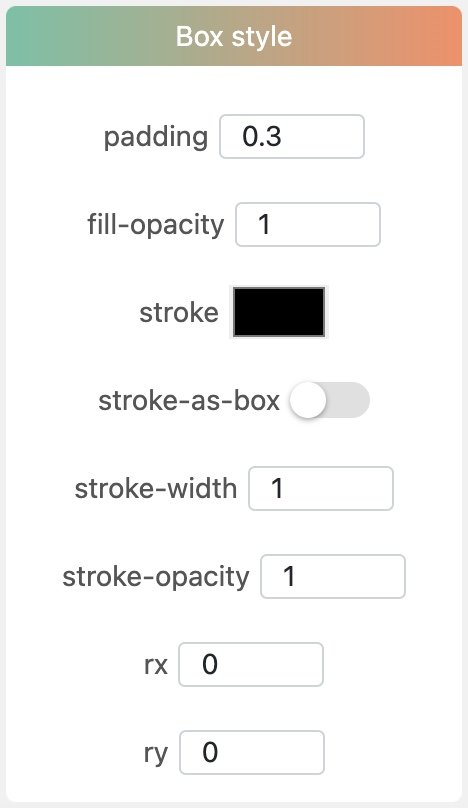
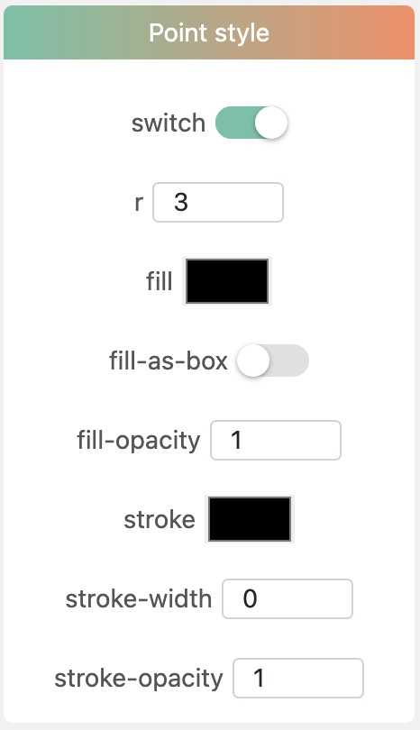

Layer data
- Example data
One column of category data and multiple columns of numerical data are needed. The median and quartiles values will be calculated automatically for each node. If you leave a cell (in the column of numerical data) blank, that null value will be excluded from calculation. When you add this dataset layer, the category column must be selected firstly, and then select other numerical data columns
| Node IDs | Categories | sample 1 | sample 2 | sample 3 | sample 4 | ... |
|---|---|---|---|---|---|---|
| MT758060 | A | 5 | 13 | 33 | 46 | ... |
| EF151805 | B | 9 | 34 | 56 | 77 | ... |
| MW309385 | C | 12 | 33 | 66 | 88 | ... |
| AJ717393 | D | 13 | 22 | 77 | 66 | ... |
- TSV format
Node IDs Categories 1 sample 1 sample 2 sample 3 sample 4
EF151805 A 6 4 2 9
AY699794 B 6 9 6 0
AJ608641 B 5 6 5 6
JF937440 B 4 0 4 5
AJ744861 C 5 6 0 2
AJ564643 B 3 2 0 4
FN393747 C 7 4 6 0
AJ717393 B 2 0 6 5
MK238778 C 6 6 0 6
AJ575266 A 5 1 7 0
MT758060 A 5 2 9
MT760162 C 1 0 9 0
NR_025743 C 9 0 7 5
FM883672 C 9 3 2 8
HE985070 A 0 7 0 1
FR687202 C 4 0 5 6
KT253329 C 9 2 0 8
HQ326178 B 4 6 9 5
MT759893 C 8 6 6 9
KF309029 A 2 3 2 8
FM991866 B 3 7 1 3
MH197303 A 5 0 6 6
FR681897 C 1 6 0 9
MW309385 B 4 8 6 9
DQ112660 B 5 2 1 9
AJ575263 B 8 8 1 4
MK096443 A 3 4 2 3
Layer controlling attributes
canvas
xAxis
background
box
Color set
color: Click this button to choose a default color set.
Custom color
switch: Whether to use custom color set.
All categories of that data column will be listed below followed by a color selector respectively. Click each color selector to select a color you like.
Box style
padding: Adjust the spacing between two boxes.
fill-opacity: Svg rect attribute.
stroke: Svg rect attribute.
stroke-as-box: Whether to change the stroke color to the same as fill color of box.
stroke-width: Svg rect attribute.
stroke-opacity: Svg rect attribute.
point
Point style
switch: Whether to draw value points.
r: Radius of points. Svg circle attribute.
fill: Svg circle attribute.
fill-as-box: Whether to change the fill color of points to the same as fill color of box.
fill-opacity: Svg circle attribute.
stroke: Svg circle attribute.
stroke-width: Svg circle attribute.
stroke-opacity: Svg circle attribute.